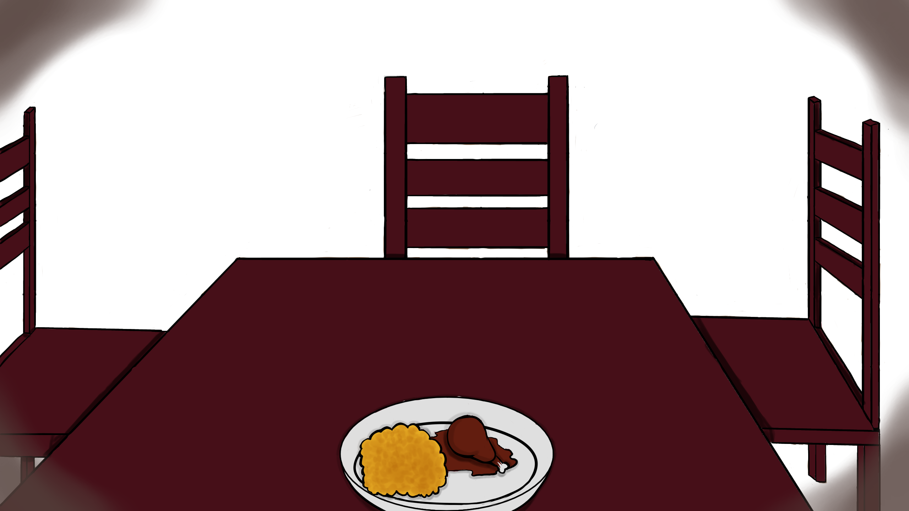

“Well, you need to eat something,” she started, and I could sense her looking at me, drilling her eyes into the top of my head. “Hmm, or else you’ll die!” She tittered from what she considered to be a joke, but I didn’t. And I didn’t dare look up for fear of catching sight of that demented grin of hers.
If only she knew that I was already practically dead.